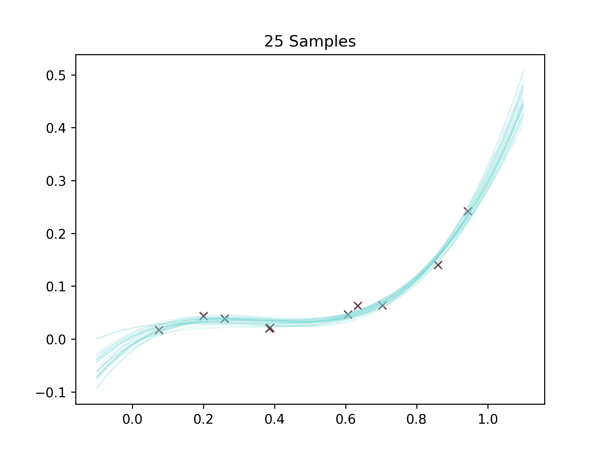
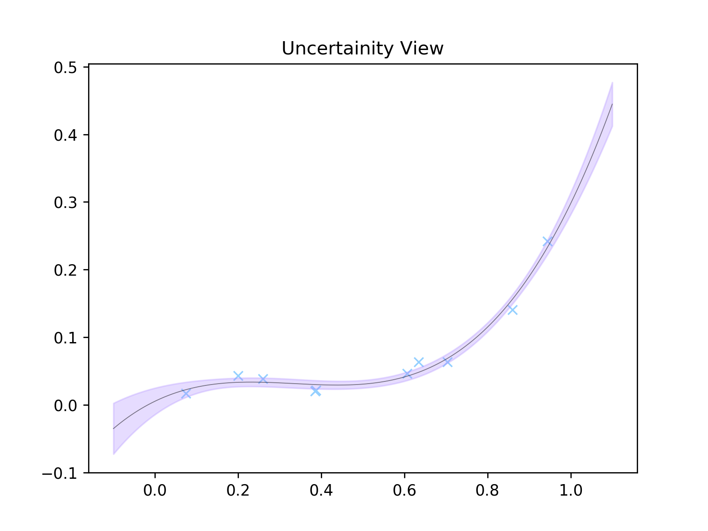

That's one fine posterior
Hello all,
It's been a while - apologies. Had a pretty hectic summer and autumn but rest assured I've got loads of posts in the pipeline (I'm sure you're on the edge of your seat with anticipation...). This one is going to take a slightly different format to the last. I'm going to show you some cool maths. Well I think it's cool anyway..
So here's the brief back-story.
I came across an interesting formula in a course on the foundations of machine learning this semester at uni. It gave a relatively neat expression for the posterior probability distribution over the weights of a Bayesian linear regression model and comes form the textbook "Machine Learning: A Probabilistic Perspective" by Kevin Murphy. What makes this formula so great is it's also super easy to implement via array-based matrix operations in, say, numpy (ooooh yeah everyone's favourite hilariously-named python thing)
SIDE NOTE: omg Ive just found out that the @ operator can
be used for matrix multiplication. Absolute game changer.
In this short note I want to show you a derivation, because it's just really neat and I couldn't actually find one in any textbook or anywhere online. I'm not sure how widely spread this is but it's nothing particularly revolutionary - pretty easy to follow I hope. Then I'll also show a quick implementation in python which gives some cool looking graphs. Everyone loves a good graph...
So let' get to it.
TW: This post is going to take a more mathematical format and a certain level of familiarity with the topics involved will be necessary :'(
Finding the posterior
The whole idea of Bayesian machine learning is to compute or estimate the posterior distribution over the model parameters given some data. We start with a prior distribution, which reflects our beliefs before seeing the data, and then update it using Bayes rule. For many problems, this is impractical or impossible to compute directly, but linear regression represents one of the rare situations where the maths is actually tractable.
As in many machine learning tasks we have some parameterised function \(f_{\mathbf{w}}(\mathbf{x})\) which we use to approximate the observed values \(\mathbf{y}\). In the case of linear regression, our \(y\)-estimates are going to be
Here, \(\Phi\) is our "design" matrix, where each row \(\phi(\mathbf{x})\) is a set of basis functions of the point location \(\mathbf{x}\).
We dont know initially what the weights are, so we represent out uncertainty by specifying a prior probability distribution which represents what we think these weights might be. We'll use a multivariate normal.
where \(\mathbf{w_{0}}\) is the mean vector and \(\Sigma_{0}\) is the covariance matrix. If we know absolutely nothing, a sensible starting point would just be a zero-mean, independant (diagonal covariance) distribution but we could already have other information that would lead us to believe otherwise.
Bayes rule tells us how we should update our beliefs to find the posterior distribution given some data.
where \(\mathcal{D}\) is our data. The joint probability distribution of observing our data, \(p(\mathcal{D}|\mathbf{w})\), given a set of weights will be the product of the probability distributions of observing each point individually. So
Where \(\sigma_{y}\) os our estimate of the uncertainty on the measurement of \(y\). We can then plug in the formula for a multivariate Gaussian distribution which is
So, dropping the constants and fiddling around with the maths, we get
Brutal to look at, yes, but hopefully each step shouldn't be too hard to follow. Any terms that don't contain \(\mathbf{w}\) we can just drop out of the exponential and incorporate into the proportionality.
Now, notice how a normal distribution with mean \(\mathbf{w_{N}}\) and covariance \(\Sigma_{N}\) would expand
Note that we are using the fact that the covariance matrix is symmetric to combine some terms.
At this point, we can look back at the expression we already computed for the posterior. By comparing term for term we can see that
and
So after a little more jollying around with linear algebra (if you've followed to this point I'm sure you can do it) we get
and
So there we have it! We've found the posterior.
Where
Prediction
Ok so that's great - what can we do with this? Well, we could draw from this distibution to give a set of plausible curves. Or, better still, for a new data point we could output a best guess with an accompanying uncertainty. But how do we get this? We can get the probability distribution over \(y\) by integrating over all the probability distributions that we could get for a certain set of model parameters, and then weight each element according to how plausible we believe it is given our posterior beliefs.
If we knew perfectly what the weights were, then the only uncertainy on our output would be the inherent noise in the data. So
So
Hmmmm.... I mean, we could do this integral but we're lazy. There's an easier way. Assuming the prediction is a Gaussian, we can reason about its form without doing this integral explicitly. We know the output \(y\) should be a noisy Gaussian centred around the function output, that is
So that means
so
After adding the Gaussian noise
Oh yeahhhh
Implementation
First we'll just make a simple class to represent Gaussians. Nothing much going on here, just makes saving and sampling from them a little neater.
import numpy as np
import matplotlib.pyplot as plt
class Gaussian:
def __init__(self, mean, cov):
self.mean = mean
self.cov = cov
def sample(self, N):
return np.random.multivariate_normal(self.mean.reshape(-1), self.cov, N)
Next, we'll create some fake noisy data. We'll we using a cubic polynomial with some Gaussian uncertainty added in.
np.random.seed(38) #started with 37 but it looked crap :'(
x = np.random.uniform(0, 1, size=(10, 1))
def make_y(w, x, y_unc):
return w[0] * x ** 3 + w[1] * x ** 2 + w[2] * x + w[3] + np.random.normal(0, y_unc, size=(10, 1))
y_unc = 0.008
A, B, C, D = 1, -1, 0.3, 0
y = make_y((A, B, C, D), x, y_unc)
Cool, now lets make the \(\Phi\) matrix by doing a cubic polynomial basis function transformation
Phi = np.concatenate([np.ones((10, 1)), x, x**2, x**3], axis=1)
and set up the prior distributions
prior_mean = np.zeros((4, 1))
prior_cov = np.identity(4)
prior_cov_inv = np.linalg.inv(prior_cov)
prior = Gaussian(prior_mean, prior_cov)
We can then use our snazzy formula to compute the posterior distribution.
posterior_cov = y_unc**2 * np.linalg.inv(y_unc**2 * prior_cov_inv + Phi.T @ Phi)
posterior_mean = posterior_cov @ (prior_cov_inv @ prior_mean + Phi.T @ y / y_unc**2)
posterior = Gaussian(posterior_mean, posterior_cov)
We'll then do two things. We're gonna make two plots. One where 25 possible curves have been randomly sampled. Another where we have literally calculated the uncertainty on each \(y\)-point along the curve.
x_axis = np.linspace(-0.1, 1.1, 1001).reshape(-1, 1)
phi_axis = np.concatenate([np.ones_like(x_axis), x_axis, x_axis**2, x_axis**3], axis=1)
mean = phi_axis @ posterior_mean
uncs = 1.5 * np.diag(phi_axis @ posterior_cov @ phi_axis.T) ** 0.5
Our polynomial function is just goig to use numpy's built in poly1d function.
f = lambda w, x: np.poly1d(w[::-1])(x)
n_samples = 25
samples = np.array([f(w, x_axis) for w in posterior.sample(n_samples)])
Oh yeah it's plotting time baby.
plt.figure()
plt.title('25 Samples')
for sample in samples:
plt.plot(x_axis, sample, color='#75d8d5', linewidth=1, alpha=5 * 1 / n_samples )
plt.scatter(x, y, zorder=1, color='#65323e', marker='x', linewidth=1)
plt.figure()
plt.title('Uncertainity View')
plt.scatter(x, y, zorder=1, color='#94D0FF', marker='x', linewidth=1)
plt.plot(x_axis, mean, color='black', linewidth=0.5, alpha=0.5)
plt.fill_between(x_axis.reshape(-1), (mean.reshape(-1) - uncs), (mean.reshape(-1) + uncs), alpha=0.3, color='#AD8CFF')
plt.show()
 